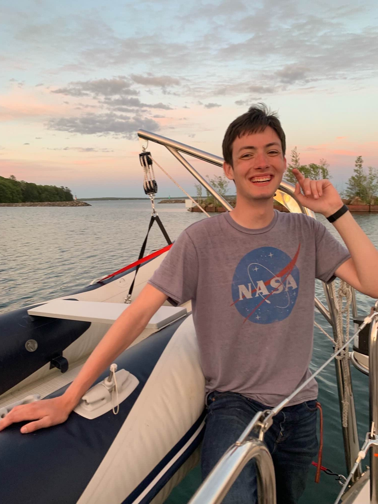

About Me
My name is Emmett Kapsner and I recently graduated from the University of Minnesota with a Bachelor's Degree in Computer Science and a minor in German. My studies focused heavily of computer graphics and human computer interaction. This involved creating everything from a feature-complete ray tracer from scratch in C and C++ to implementing a novel interaction technique in VR using the Godot game engine. This experience has taught me a wide variety of technical skills and how to adapt to challenging circumstances.
Though I primarily focused on computer graphics and human-computer interaction, my interests in computing are broad. I gravitate towards any niches within software development that requires interesting decisions to be made and trade-offs to be weighed. For example, the design and implementation of computer graphics often consist of a balancing act between appearences and performance.
I am proficient in many Object-Oriented programming languages. This include, but are not limited to, C. C++, Java, and Python. I also have some experience with Javascript/Typescript, HTML, GLSL, and C#. I am always trying to learn new skills and languages. This website has been an attempt to apply HTML and CSS and it is still very much a work-in-progress. I plan on adding some Javascript functionality once I find an excuse to.
Despite practicality dictating otherwise, I got a minor in German. This was in the stead of an internship, which may have been a mistake. That being said, the experience was fantastic. I learned a lot and I like to think that my German is pretty good, though it has not been put to test (yet).